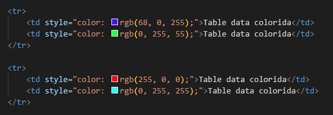

Modificações inline são modificações que são colocadas dentro da tag. Apesar de estar aqui, não é recomendada a utilização
| Table data colorida | Table data colorida |
| Table data colorida | Table data colorida |
Essas modificações são feitas usando style dentro da tag, podendo escolher quais modificações você deseja fazer. Para essas cores da tabela se usa style="color: cor-desejada ;":
